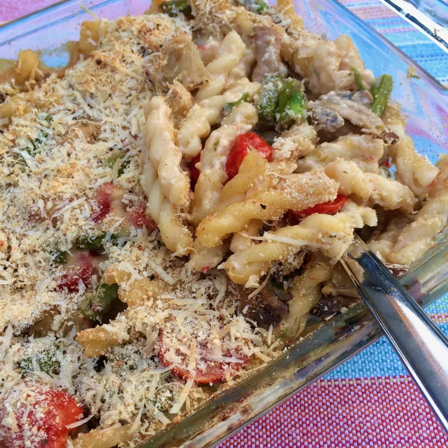

Baked Asparagus and Mushroom Pasta

Ingredients
- ½ (16 ounce) package gemelli pasta
- 2 tablespoons herb-infused extra-virgin olive oil
- ½ medium onion, chopped
- pound fresh asparagus, cut into 1-inch pieces
- 1 (8 ounce) package sliced mushrooms
- cups cherry tomatoes, halved
- 2 cloves garlic, minced
- ¼ teaspoon crushed red pepper flakes
- 1 pinch salt and ground black pepper to taste
- tablespoons unsalted butter
- 2 tablespoons all-purpose flour
- 2 cups 1% milk
- ⅔ cup grated Parmigiano-Reggiano cheese, divided
- ¼ cup shredded provolone cheese
- ⅓ cup Italian-seasoned bread crumbs
Directions
- Preheat the oven to 350 degrees F (175 degrees C). Grease a 7x11-inch baking dish.
- Bring a large pot of lightly salted water to a boil; cook gemelli at a boil until flexible but still firm to the bite, about 6 minutes.
- Meanwhile, heat oil in a large skillet over medium heat until shimmering. Add onion and stir for 2 minutes. Add asparagus and mushrooms and continue to cook, stirring occasionally, until mushrooms begin to soften and asparagus is bright green, about 4 minutes.
- Add tomatoes, garlic, red pepper flakes, salt, and pepper. Continue cooking for about 4 minutes, stirring occasionally.
- Pour the vegetable mixture into a large mixing bowl. Drain pasta and stir into the bowl.
- Melt butter in the same skillet. Add flour and cook, stirring constantly, until the mixture bubbles, about 4 minutes. Pour in milk, stirring briskly to avoid lumps. Continue to stir until sauce thickens and bubbles again, about 4 minutes. Remove from heat and stir in 1/3 cup Parmigiano-Reggiano and provolone cheese until melted.
- Pour the cheese sauce over the pasta and vegetables and stir to combine. Pour into the prepared baking dish. Taste and adjust seasonings. Toss remaining Parmigiano-Reggiano with bread crumbs and sprinkle over the casserole.
- Bake in the preheated oven until bubbly and lightly browned, 20 to 25 minutes.
Go back to homepage